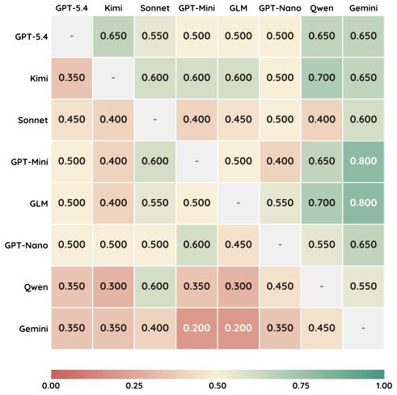
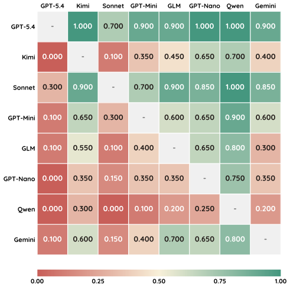
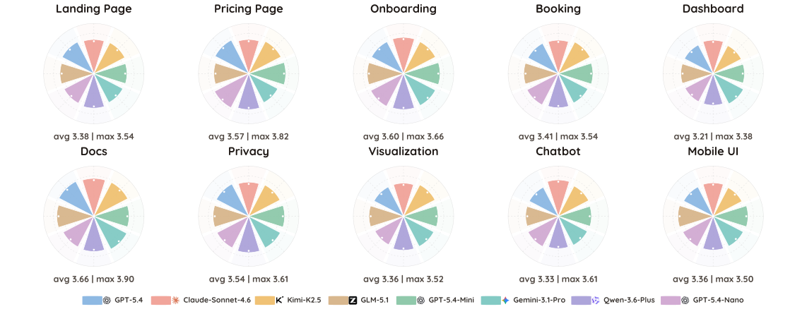
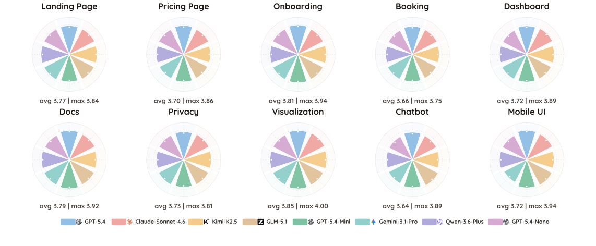
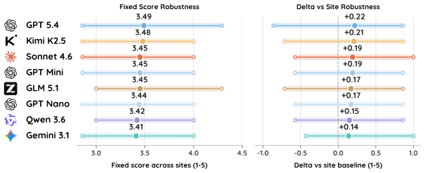
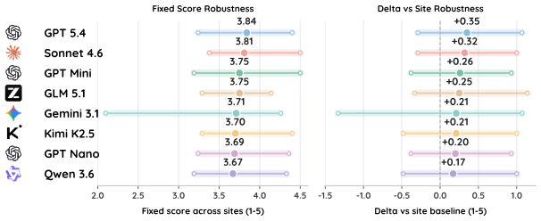
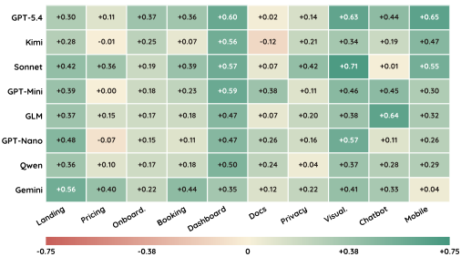

Version A
Interactive page
Measuring the actionability of LLM-generated UX critiques.
Large language models (LLMs) are increasingly deployed as UX judges that inspect interfaces, diagnose usability problems, and propose repairs. Yet no controlled benchmark measures whether the resulting critiques are reliable and actionable across heterogeneous product surfaces. We introduce UXBench, a benchmark for evaluating LLMs as interaction-grounded UX judges. UXBench comprises local-first runnable web fixtures spanning ten product-surface families, paired with coverage-gated browser exploration that forces models to collect interaction evidence before reporting. Each judge model produces a structured UX report over seven rubric dimensions; report quality is measured by whether a fixed downstream repair agent can improve the interface based on the critique. We evaluate eight frontier models under both an automated repair-lift protocol and a blind human validation study. Results show that UX judging is neither saturated nor one-dimensional: models differ meaningfully in report actionability, exhibit distinct rubric-level repair signatures, vary in fixture-level reliability, and trade leadership across surface categories.
UXBench fixes everything downstream of the judge so that any score difference reflects the report, not the environment. Only the first two stages depend on the judge under test.

Browser exploration with coverage checks.
Evidence-grounded critique over seven dimensions.
Fixed agent edits from the report.
Fixed scorer rates the repaired interface.
41 fixtures across 10 surface families: 11 real-product anchors and 30 synthetic siblings.
Every judge starts from the same unrepaired baseline. Each result below carries its own toggle, so you can read the leaderboard table, the pairwise win-rate heatmap, the per-family profiles, and fixture-level reliability independently — through either the automated repair-lift scorer or the blind human study.


One dial per surface family. Each wedge is one of the eight judges, drawn to its mean repaired score within that family, with the family's average and best score annotated below.


Category-level repaired-score profiles across the eight evaluated models. Each panel reports the category mean and the best repaired score. The leading model changes across surface types, and the gap between category averages and best-model scores varies noticeably across surfaces.
Each judge's mean repaired score (dot) and its min–max spread across individual fixtures, repeated on the right as Δ over each fixture's own baseline.


Per-fixture repaired scores and uplift Δ relative to site baseline. Models with higher mean lift exhibit wider site-level spreads, separating the sweep along an axis the aggregate column cannot expose.
This section holds the two protocols side by side: how the ranking reorders, where human and automated scores diverge by surface, and the paired significance behind every lift estimate.
Each cell is the blind human rating minus the automated LLM score for one judge on one surface family. Green means human reviewers rated the repaired page higher than the automated scorer; red means the reverse.

Calibration, not contradiction. The gaps are almost entirely positive and widest on visually dense, stateful, or mobile-facing surfaces — dashboard, data visualization, chatbot, and mobile UI — where the automated scorer is least sensitive to the visual coherence and interaction legibility that humans perceive directly. Automated repair lift stays a reliable screen; human review is what interprets the close ranks.
Directional, not identical. GPT-5.4 tops both protocols and Claude-Sonnet-4.6 stays near the top, but the middle of the pack reorders once humans rate the repaired interfaces.
Bootstrap CIs over fixtures; paired t and Wilcoxon p-values against each fixture's unrepaired baseline; dz is the paired effect size. Every judge stays significantly above zero under both protocols.
UX judging is measurable, useful, and still unresolved: all eight judges improve the same fixtures under the same fixed repair and scoring pipeline, yet they differ along several axes at once. The six findings below summarize what the benchmark reveals.
Explore two runnable AeroIQ versions of the same monitoring dashboard, then choose which one better supports triage and diagnosis.
One excerpt from a Booking-family report. Each issue is grounded in a visible failure mode and already phrased as a localized fix the repair agent can act on.
Booking fixture · persona: curious first-time visitor · 9 findings
“The core hotel funnel is generally understandable.” The biggest UX weaknesses are in result filtering and the mobile checkout layout, where overflow, tiny targets, and weak progress feedback make completion feel brittle.
reservation, confirmation, hotel-detail, room-selectiontokyo.html, shinjuku.htmlsignin.html, register.html, reservation.htmlreservation.html, confirmation.htmlIf UXBench helps your research, please cite the manuscript. This placeholder will be updated after public release or review.
% Citation placeholder · update after public release
@misc{uxbench2026,
title = {UXBench: Measuring the Actionability of LLM-Generated UX Critiques},
author = {Anonymous},
year = {2026},
note = {Manuscript in preparation}
}